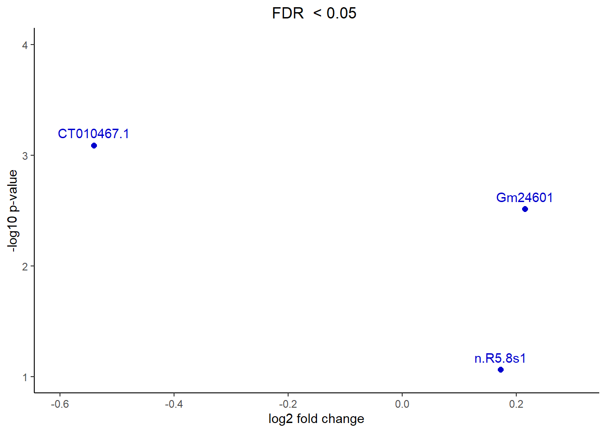

Last updated: 2021-03-25
Checks: 7 0
Knit directory: Report/
This reproducible R Markdown analysis was created with workflowr (version 1.6.2). The Checks tab describes the reproducibility checks that were applied when the results were created. The Past versions tab lists the development history.
Great! Since the R Markdown file has been committed to the Git repository, you know the exact version of the code that produced these results.
Great job! The global environment was empty. Objects defined in the global environment can affect the analysis in your R Markdown file in unknown ways. For reproduciblity it’s best to always run the code in an empty environment.
The command set.seed(20210325) was run prior to running the code in the R Markdown file. Setting a seed ensures that any results that rely on randomness, e.g. subsampling or permutations, are reproducible.
Great job! Recording the operating system, R version, and package versions is critical for reproducibility.
Nice! There were no cached chunks for this analysis, so you can be confident that you successfully produced the results during this run.
Great job! Using relative paths to the files within your workflowr project makes it easier to run your code on other machines.
Great! You are using Git for version control. Tracking code development and connecting the code version to the results is critical for reproducibility.
The results in this page were generated with repository version 5d21a86. See the Past versions tab to see a history of the changes made to the R Markdown and HTML files.
Note that you need to be careful to ensure that all relevant files for the analysis have been committed to Git prior to generating the results (you can use wflow_publish or wflow_git_commit). workflowr only checks the R Markdown file, but you know if there are other scripts or data files that it depends on. Below is the status of the Git repository when the results were generated:
working directory clean
Note that any generated files, e.g. HTML, png, CSS, etc., are not included in this status report because it is ok for generated content to have uncommitted changes.
These are the previous versions of the repository in which changes were made to the R Markdown (analysis/Report.Rmd) and HTML (docs/Report.html) files. If you’ve configured a remote Git repository (see ?wflow_git_remote), click on the hyperlinks in the table below to view the files as they were in that past version.
| File | Version | Author | Date | Message |
|---|---|---|---|---|
| Rmd | 5d21a86 | Dosoko | 2021-03-25 | added a new analysis file |
To Begin the Analysis the Datasets have to be imported. In this case two datasets are used. The first dataset originates from small-seq and includes the counts of small RNAs in oocytes. The second dataset was obtained with the NEBNext protocol and contains the biotype counts of small RNAs in cauda epididymosomes. After importing both data sets all RNAs types are recalled to check for the RNAs of interest.
b2 <- read.csv("C:/Users/danio/Desktop/6th_Semester/Blockcourse/Study_of_Epigenetic_Mechanisms_in_Mental_Health/firstweek/b2.csv", row.names=1, header = TRUE, sep = ",")
b2$type <- as.factor(b2$type)
epy<- read.csv("C:/Users/danio/Desktop/6th_Semester/Blockcourse/Study_of_Epigenetic_Mechanisms_in_Mental_Health/firstweek/BexceRpt_biotypeCounts.csv", row.names=1, header = TRUE, sep = ",")Detected small RNAs in oocytes:
levels(b2$type) [1] "IG_C_gene" "IG_C_pseudogene"
[3] "IG_D_gene" "IG_D_pseudogene"
[5] "IG_J_gene" "IG_LV_gene"
[7] "IG_pseudogene" "IG_V_gene"
[9] "IG_V_pseudogene" "lncRNA"
[11] "miRNA" "misc_RNA"
[13] "Mt_rRNA" "Mt_tRNA"
[15] "polymorphic_pseudogene" "processed_pseudogene"
[17] "protein_coding" "pseudogene"
[19] "ribozyme" "rRNA"
[21] "scaRNA" "scRNA"
[23] "snoRNA" "snRNA"
[25] "sRNA" "TEC"
[27] "TR_C_gene" "TR_D_gene"
[29] "TR_J_gene" "TR_J_pseudogene"
[31] "TR_V_gene" "TR_V_pseudogene"
[33] "transcribed_processed_pseudogene" "transcribed_unitary_pseudogene"
[35] "transcribed_unprocessed_pseudogene" "translated_unprocessed_pseudogene"
[37] "unitary_pseudogene" "unprocessed_pseudogene" Detected small RNAs in cauda epididymosomes:
rownames(epy) [1] "miRNA" "tRNA"
[3] "protein_coding" "snRNA"
[5] "piRNA" "misc_RNA"
[7] "retained_intron" "snoRNA"
[9] "Mt_rRNA" "processed_transcript"
[11] "processed_pseudogene" "nonsense_mediated_decay"
[13] "TEC" "lincRNA"
[15] "Mt_tRNA" "antisense"
[17] "scaRNA" "ribozyme"
[19] "unprocessed_pseudogene" "transcribed_processed_pseudogene"
[21] "pseudogene" "rRNA"
[23] "sense_intronic" "circularRNA"
[25] "transcribed_unprocessed_pseudogene" "IG_C_gene"
[27] "translated_processed_pseudogene" "IG_V_gene"
[29] "sense_overlapping" "bidirectional_promoter_lncRNA"
[31] "transcribed_unitary_pseudogene" "polymorphic_pseudogene"
[33] "non_stop_decay" "IG_V_pseudogene"
[35] "unitary_pseudogene" "translated_unprocessed_pseudogene"
[37] "IG_J_gene" "macro_lncRNA"
[39] "scRNA" "sRNA"
[41] "TR_C_gene" "TR_J_gene"
[43] "TR_V_gene" "TR_V_pseudogene"
[45] "exogenous_miRNA" "exogenous_rRNA"
[47] "exogenous_genomes" In the next steps the non-essential biotypes are combined into the group “others”, the biotypes of interest and therefore excluded from “others” are miRNA, snoRNA, rRNA and protein coding RNA .
The following table shows all small RNAs measurements from the oocyte analysis:
levels(b2$type) [c(1:10,12,13:15,16,18,19,21,22,24:38)] <- "others"
table(b2$type)
others miRNA protein_coding rRNA snoRNA
29415 2207 21926 354 1507 In the case of the cauda epididymosomes the data was pre configurated, which explains the amount of entries per small RNA.
epy$type <- as.factor(row.names(epy))
levels(epy$type)[c(1:12, 14:22, 24:26, 28:31, 33:47)] <- "others"
table(epy$type)
others miRNA protein_coding rRNA snoRNA
43 1 1 1 1 library(reshape)Warning: Paket 'reshape' wurde unter R Version 4.0.4 erstellt
Attache Paket: 'reshape'The following objects are masked from 'package:S4Vectors':
expand, renamecounts_b2<- matrix(nrow=5, ncol= 53, dimnames = list(levels(as.factor(b2$type)), colnames(b2[,1:53]))) #creates empty table with column and row names from b2
for (i in 1:53) { counts_b2[,i] <- tapply( b2[,i], b2$type, FUN=sum)} #sums up values per category
counts_b2_normalized <- prop.table(counts_b2, margin=2) #normalizes data margin 2=rows 1=columns
counts_b2_normalized <- counts_b2_normalized*100 #turns values from 1 to 100%
counts_b2_normalized_Transposed <- t(counts_b2_normalized) #needed for proper melt function
b2_norm_melt <- melt(counts_b2_normalized_Transposed)
names(b2_norm_melt) <- c("Cell", "Type", "Percentage")
#need melt for not normalized:
counts_b2_Transposed <- t(counts_b2)
b2_raw_melt <- melt(counts_b2_Transposed)
names(b2_raw_melt) <- c("Cell", "Type", "Counts")
counts_epy<- matrix(nrow=5, ncol= 10, dimnames = list(levels(as.factor(epy$type)), colnames(epy[,1:10]))) #creates empty table with column and row names from b2
for (i in 1:10) { counts_epy[,i] <- tapply( epy[,i], epy$type, FUN=sum)} #sums up values per category here only important for others
counts_epy_normalized <- prop.table(counts_epy, margin=2) #normalizes data margin 2=rows 1=columns
counts_epy_normalized <- counts_epy_normalized*100 #turns values from 1 to 100%
counts_epy_normalized_Transposed <- t(counts_epy_normalized) #needed for proper melt function
epy_norm_melt <- melt(counts_epy_normalized_Transposed)
names(epy_norm_melt) <- c("Cell", "Type", "Percentage")
#need melt for not normalized:
counts_epy_Transposed <- t(counts_epy)
epy_raw_melt <- melt(counts_epy_Transposed)
names(epy_raw_melt) <- c("Cell", "Type", "Counts")To visualize the importance of normalisation to avoid the PCR-bias (GC-content influences the duplication speed), the datasets are displayed in two graphs, with the first one displaying the ratios with raw read counts and the second graph displaying the same data after normalisation.
library(ggplot2)
ggplot(data=b2_raw_melt, aes(x=Cell, y=Counts, fill= Type)) +
geom_bar(stat="identity") +
scale_x_discrete(guide = guide_axis(angle = -90))+
labs(title= "Oocyte small RNA libraries", y="Counts", x = "Cell")ggplot(data=b2_norm_melt, aes(x=Cell, y=Percentage, fill= Type)) +
geom_bar(stat="identity") +
scale_x_discrete(guide = guide_axis(angle = -90))+
labs(title= "Normalised Oocyte small RNA libraries", y="Percentage", x = "Cell")library(ggplot2)
ggplot(data=epy_raw_melt, aes(x=Cell, y=Counts, fill= Type)) +
geom_bar(stat="identity") +
scale_x_discrete(guide = guide_axis(angle = -90))+
labs(title= "Cauda epididymosomes small RNA libraries", y="Counts", x = "Cell")ggplot(data=epy_norm_melt, aes(x=Cell, y=Percentage, fill= Type)) +
geom_bar(stat="identity") +
scale_x_discrete(guide = guide_axis(angle = -90))+
labs(title= "Normalised epididymosomes small RNA libraries", y="Percentage", x = "Cell")On a first glance it is visible that the cauda epididymosomes dont include any rRNA. Additionally by comparing the two normalised graphs one can deduce that the oocytes express more rRna and snoRNA than the cauda epigidymosomes but less miRNA.
counts2 <- read.csv("C:/Users/danio/Desktop/6th_Semester/Blockcourse/Study_of_Epigenetic_Mechanisms_in_Mental_Health/firstweek/counts2.csv", row.names=1, header = TRUE, sep = ",")
lof <- read.csv("C:/Users/danio/Desktop/6th_Semester/Blockcourse/Study_of_Epigenetic_Mechanisms_in_Mental_Health/firstweek/List_of_cells.csv", header = TRUE, sep = ";")
counts_def <- counts2[c(10,14:15),1:38] #removing types and non-Msus/CTRL samples
counts_lof <- counts_def[,-1]
rownames(counts_lof) <- counts_def[,1] #1st column to rownames
lof2 <- lof[c(1:3,7:16,32:55),]As seen before, normalization is important to allow proper comparison between reads. The following graphs express the oocyte gene expressions in boxplots, the first one is the raw read, the second one express the normalized value, in which the bottom line is the same, giving us the foundation for proper comparison.
#Creating/combining wanted data
dge <- DGEList(counts=counts_lof, samples=lof2, group = lof2$Group)
dge <- calcNormFactors(dge) #TMM
#normalization
norm_dge <- cpm(dge, log = TRUE)
boxplot(counts_lof, main = "Boxplot of log counts", las=2) #before normboxplot(norm_dge, main = "Boxplot of normalized log counts", las=2) #after normTo see the differences inbetween the oocytes the clustered are visiualized using PCA. The Cells are described by the two gene expressions which offer the biggest variances.
#PCA after normalisation
#prcomp(lof, scale=FALSE)
df <- t(norm_dge)
row.names(df) <- paste(lof2$Group) #turns cell names (a1:a55) into treatment/groups
df_pca <- prcomp(df) #use df as it is normalized and make pca where x describes de diffrent principal components
df_out <- as.data.frame(df_pca$x)
df_out$group <- sapply( strsplit(as.character(row.names(df)), "_"), "[[", 1 ) #adds row names as column behind it as column "group"
percentage <- round(df_pca$sdev / sum(df_pca$sdev) * 100, 2) #expresses counts as %
percentage <- paste( colnames(df_out), "(", paste( as.character(percentage), "%", ")", sep="") ) #describes the percentage each PC covers
group <- lof2$Group
pca_CTRL_vs_MSUS <- ggplot(df_out, aes(x=PC1, y=PC2, color=group)) #starting ggplot
pca_CTRL_vs_MSUS <- pca_CTRL_vs_MSUS + #producing PCA
geom_point(size = 2) + xlab(percentage[1]) + ylab(percentage[2]) +
theme_classic() + theme(legend.title = element_blank()) +
ggtitle("PCA plot CTRL and MSUS") + theme(plot.title = element_text(size = 20, hjust=0.5)) +
theme(
axis.text.x = element_blank(),
axis.text.y = element_blank(),
axis.ticks = element_blank())
pca_CTRL_vs_MSUSTo properly compare the effects of Control and MSUS first a design matrix which expresses which sample belongs to which group in binary is needed.
group <- lof2$Group
design <- model.matrix(~group)
design (Intercept) groupMSUS
1 1 0
2 1 0
3 1 0
4 1 1
5 1 1
6 1 1
7 1 1
8 1 1
9 1 1
10 1 1
11 1 1
12 1 1
13 1 0
14 1 0
15 1 0
16 1 0
17 1 1
18 1 1
19 1 1
20 1 1
21 1 1
22 1 1
23 1 1
24 1 1
25 1 1
26 1 0
27 1 0
28 1 0
29 1 0
30 1 0
31 1 0
32 1 0
33 1 0
34 1 0
35 1 0
36 1 0
37 1 0
attr(,"assign")
[1] 0 1
attr(,"contrasts")
attr(,"contrasts")$group
[1] "contr.treatment"The next step is to analyse which genes are differantly expressed. To accomplish this a linear function is fitted to the data and their expression is analysed statistically.
# Estimate dispersion
dge <- estimateDisp(dge, design, robust=TRUE)
# Use voom transformation
v <- voom(dge, design, plot=FALSE)
fit_limma <- lmFit(v, design)
fit_limma <- eBayes(fit_limma)
out_limma <- topTable(fit_limma, adjust="BH", n = "Inf")
head (out_limma) logFC AveExpr t P.Value adj.P.Val B
CT010467.1 -0.5405604 17.94575 -3.605789 0.0008132907 0.002439872 -0.6924148
Gm24601 0.2149692 18.74298 3.140563 0.0030695317 0.004604297 -2.1084320
n.R5.8s1 0.1717594 18.06796 1.752960 0.0868361356 0.086836136 -4.8248902##Highlight genes that have an absolute fold change > 2 and FDR < 0.05
out_limma$threshold1 = as.factor(abs(out_limma$logFC) > 2 & out_limma$adj.P.Val < 0.05)
cbPalette<- c("mediumblue", "firebrick1")
volcano_oocyte = ggplot(data=out_limma, aes(x=logFC, y=-log10(P.Value), colour=threshold1)) +
geom_point(size=2) +
xlab("log2 fold change") + ylab("-log10 p-value") + theme_classic() + theme(legend.position="none") + scale_color_manual (values=cbPalette) +
ggtitle("FDR < 0.05 ") + theme(plot.title = element_text(hjust=0.5))
volcano_oocyte
sessionInfo()R version 4.0.3 (2020-10-10)
Platform: x86_64-w64-mingw32/x64 (64-bit)
Running under: Windows 10 x64 (build 19041)
Matrix products: default
locale:
[1] LC_COLLATE=German_Switzerland.1252 LC_CTYPE=German_Switzerland.1252
[3] LC_MONETARY=German_Switzerland.1252 LC_NUMERIC=C
[5] LC_TIME=German_Switzerland.1252
attached base packages:
[1] parallel stats4 stats graphics grDevices utils datasets
[8] methods base
other attached packages:
[1] reshape_0.8.8 ggplot2_3.3.3
[3] DESeq2_1.30.0 SummarizedExperiment_1.20.0
[5] Biobase_2.50.0 MatrixGenerics_1.2.0
[7] matrixStats_0.57.0 GenomicRanges_1.42.0
[9] GenomeInfoDb_1.26.0 IRanges_2.24.0
[11] S4Vectors_0.28.0 BiocGenerics_0.36.0
[13] edgeR_3.32.1 limma_3.46.0
[15] workflowr_1.6.2
loaded via a namespace (and not attached):
[1] httr_1.4.2 bit64_4.0.5 splines_4.0.3
[4] blob_1.2.1 GenomeInfoDbData_1.2.4 yaml_2.2.1
[7] pillar_1.4.6 RSQLite_2.2.1 lattice_0.20-41
[10] glue_1.4.2 digest_0.6.27 RColorBrewer_1.1-2
[13] promises_1.1.1 XVector_0.30.0 colorspace_2.0-0
[16] plyr_1.8.6 htmltools_0.5.0 httpuv_1.5.4
[19] Matrix_1.2-18 XML_3.99-0.5 pkgconfig_2.0.3
[22] genefilter_1.72.0 zlibbioc_1.36.0 purrr_0.3.4
[25] xtable_1.8-4 scales_1.1.1 whisker_0.4
[28] later_1.1.0.1 BiocParallel_1.24.1 git2r_0.28.0
[31] tibble_3.0.4 annotate_1.68.0 farver_2.0.3
[34] generics_0.1.0 ellipsis_0.3.1 withr_2.3.0
[37] survival_3.2-7 magrittr_1.5 crayon_1.3.4
[40] memoise_1.1.0 evaluate_0.14 fs_1.5.0
[43] tools_4.0.3 lifecycle_0.2.0 stringr_1.4.0
[46] munsell_0.5.0 locfit_1.5-9.4 DelayedArray_0.16.0
[49] AnnotationDbi_1.52.0 compiler_4.0.3 rlang_0.4.8
[52] grid_4.0.3 RCurl_1.98-1.2 rstudioapi_0.13
[55] labeling_0.4.2 bitops_1.0-6 rmarkdown_2.5
[58] gtable_0.3.0 DBI_1.1.0 R6_2.5.0
[61] knitr_1.30 dplyr_1.0.2 bit_4.0.4
[64] rprojroot_2.0.2 stringi_1.5.3 Rcpp_1.0.5
[67] vctrs_0.3.4 geneplotter_1.68.0 tidyselect_1.1.0
[70] xfun_0.19